CHAPTER 18
Purification
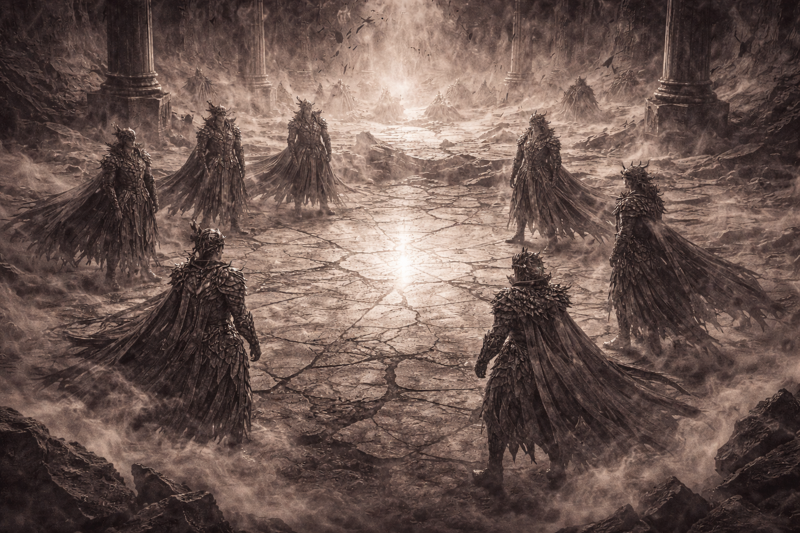
They did not gather as rulers.
They gathered because they had no choice.
The fracture had spoken.
Isolation had failed.
Survival now required presence.
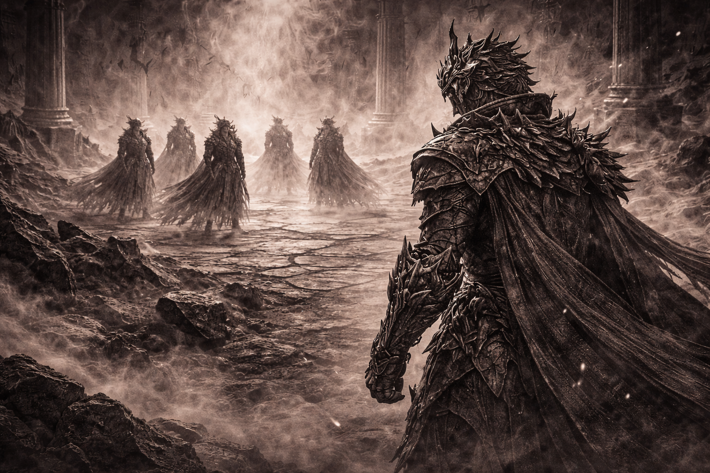
Ferron stood apart from them.
His armor heavier.
His silence sharper.
Not corrupted—
but no longer aligned.
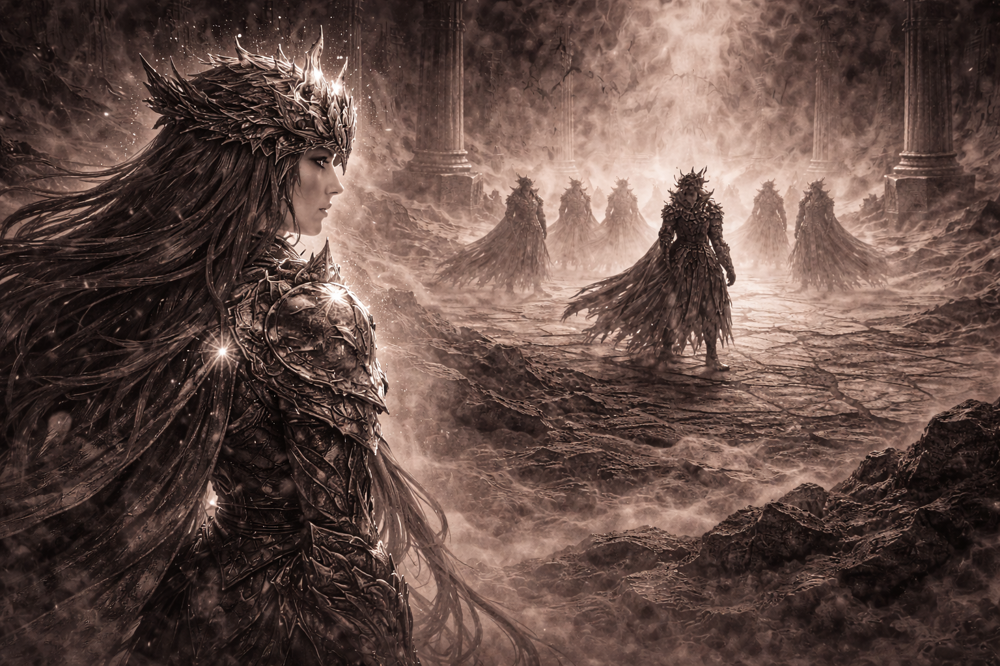
Aetheria understood first.
This was not betrayal.
Not rebellion.
Ferron was not the cause.
He was the result.
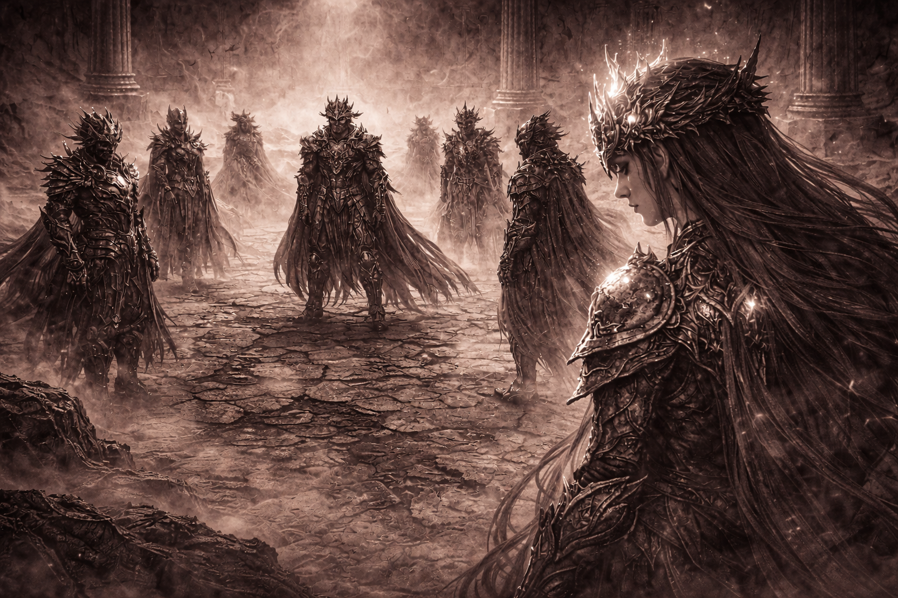
“If we destroy him,”
Aetheria said quietly,
“we validate the fracture.”
No one answered.
No one disagreed.
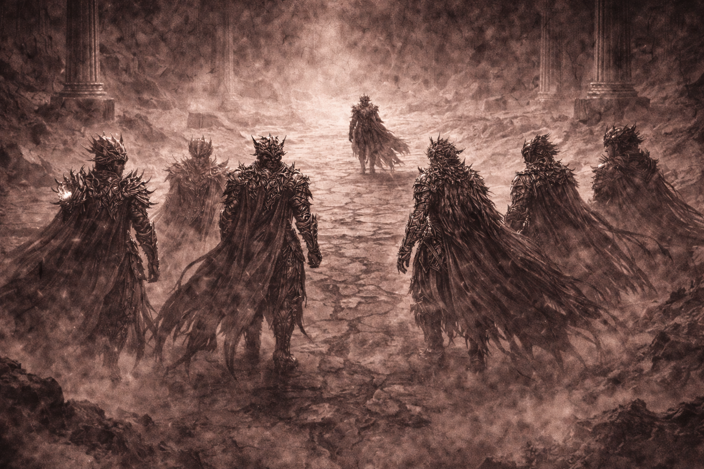
They moved together.
Not as judges.
Not as executioners.
As sovereigns accepting
responsibility for neglect.
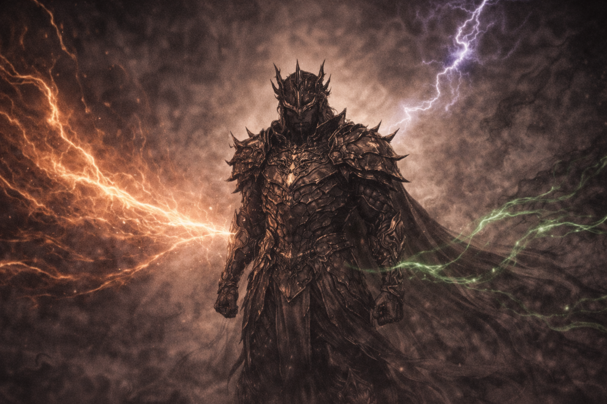
Ferron resisted.
Not with rage.
Not with hatred.
With fear.
The fear of losing purpose.
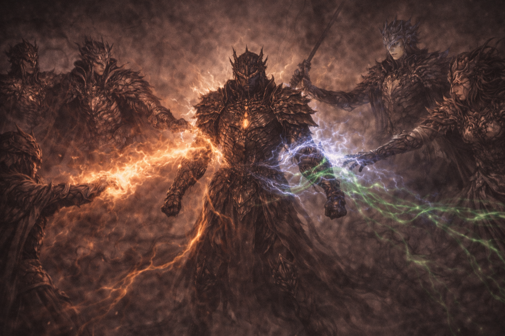
Power converged slowly.
Fire restrained force.
Storm disrupted rigidity.
Life softened hardened iron.
No will dominated.
Balance held.
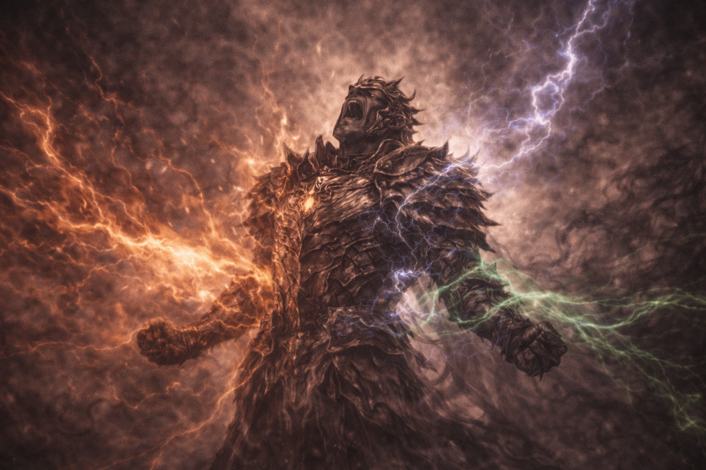
The purification did not burn.
It did not tear.
It removed certainty.
Stripped absolutes away.
Ferron screamed—
not in pain, but clarity.
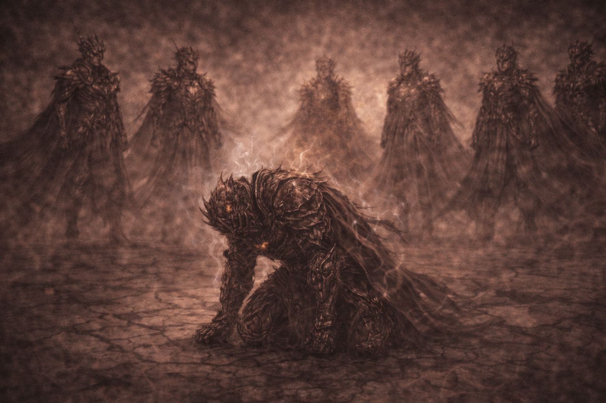
When it ended,
Ferron collapsed.
His armor fractured.
His resolve exposed.
Sovereign still.
No longer unyielding.
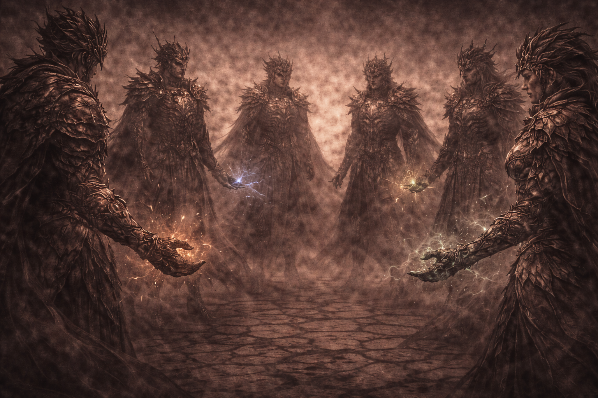
The Seven felt it immediately.
Power lost precision.
Control demanded effort.
Purification required payment.
The universe collected.
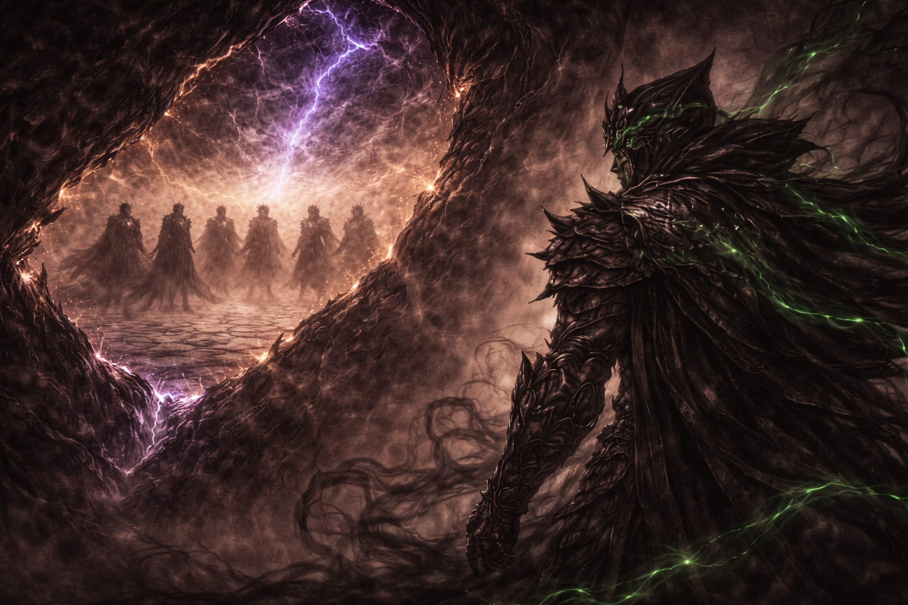
Beyond the fracture,
something observed.
No judgment.
No reaction.
Only certainty—
loss had been learned.
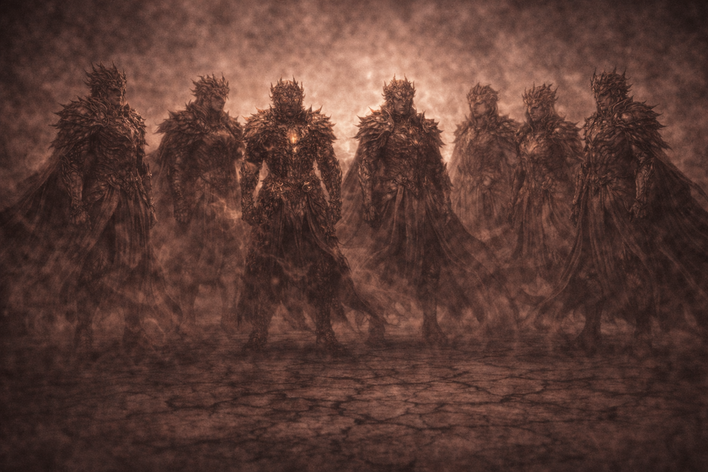
They stood together again.
Not stronger.
Not unified.
But aware.
Unity carries cost.
TO BE CONTINUED